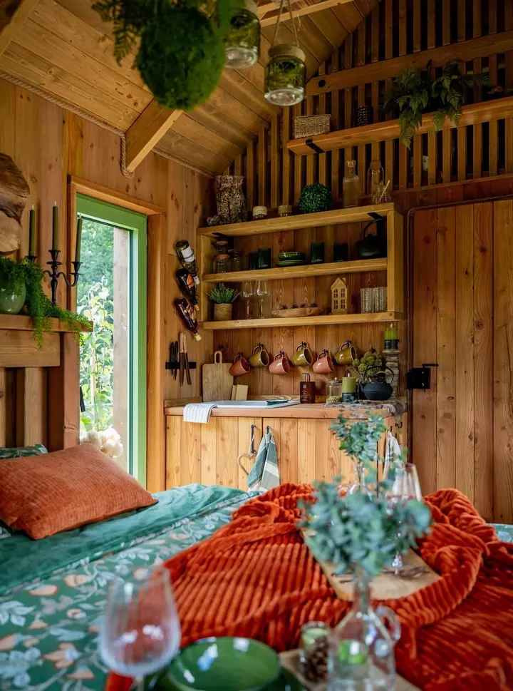
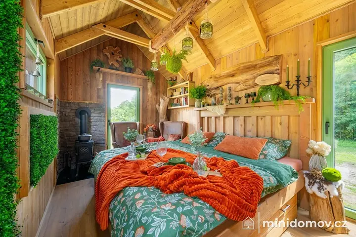
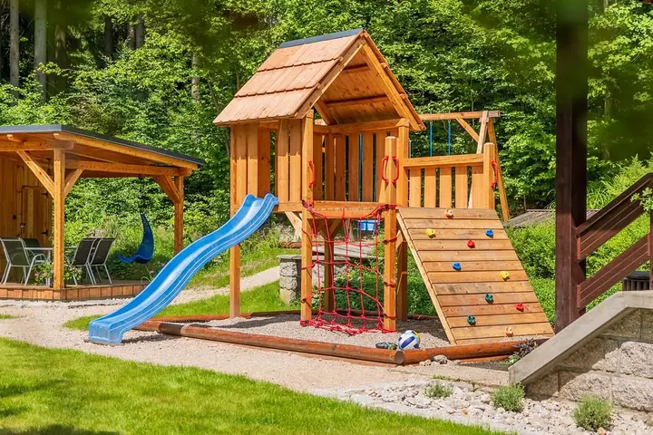
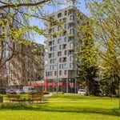

01 / 04
Fotografie nemovitostí
Fotím byty, domy i komerční prostory pro realitní kanceláře a makléře. Interiéry nasvítím vlastním světlem, takže vyniknou i tmavé místnosti.
Zeptat se na termín→


Nemovitosti, které vyniknou v inzerátu
Zeptat se na termín →(01) Ahoj
Jmenuji se Jiří Částka a fotím nemovitosti pro realitní kanceláře, hotely, penziony i restaurace . Kromě fotografií připravuji virtuální homestaging, 3D vizualizace interiérů a půdorysy , aby váš inzerát o prostoru řekl co nejvíc.
1 103lidí sleduje mou práci na Instagramu
723příspěvků s fotkami a příběhy
(02) Co fotím
01 / 04
Fotím byty, domy i komerční prostory pro realitní kanceláře a makléře. Interiéry nasvítím vlastním světlem, takže vyniknou i tmavé místnosti.
Zeptat se na termín→02 / 04
Fotografie pro hotely, penziony, apartmány, restaurace i tinyhouse. Ukážu prostory tak, aby si je hosté chtěli rezervovat.
Zeptat se na termín→03 / 04
Prázdný nebo neútulný prostor virtuálně zařídím, aby si zájemci uměli představit, jak v něm budou bydlet. Nabízím také virtuální rekonstrukci a virtuální soumrak.
Zeptat se na termín→Dále nabízím
Připravím 2D a 3D půdorysy i 3D vizualizace interiérů. Doplní fotografie a dají inzerátu jasnou představu o dispozici.
↗(04) Postup
Od první zprávy po hotovou galerii.
Krok 1 z 4
Napíšete mi nebo zavoláte, jakou nemovitost potřebujete nafotit a k čemu fotky použijete. Společně vybereme služby a termín.
Krok 2 z 4
Poradím, jak nemovitost před focením připravit, aby na fotkách působila uklizeně a vzdušně.
Krok 3 z 4
Na místě fotím na fullframe Nikon a interiéry dosvětluji vlastním světlem, aby byly světlé a rovnoměrné.
Krok 4 z 4
Snímky pečlivě upravím a předám vám je připravené k použití. Podle potřeby doplním homestaging, půdorysy nebo vizualizace.
Světlo, které interiéru chybí, dodám.
(05) Za objektivem
S fotografováním nemovitostí jsem začínal kolem roku 2000 a od roku 2015 se mu věnuji naplno. Dnes tvoří nejrůznější nemovitosti kolem 90 % všech mých zakázek. Spolupracuji s desítkami realitních kanceláří a stovkami makléřů, nafotil jsem přes 2200 nemovitostí a k tomu desítky hotelů, penzionů, apartmánů a restaurací.
Fotím na fullframe Nikon s vysokým rozlišením a objektivy Nikon a Tamron od 14 do 500 mm. Přirozené světlo málokdy stačí, proto interiéry nasvěcuji vlastní technikou. Díky tomu je světlo rovnoměrné i v tmavých místnostech nebo při složitých světelných podmínkách. Pečlivá postprodukce pak dotáhne výsledné snímky.
Sídlím v Liberci. Kromě nemovitostí fotím také jídlo, propagační a lifestyle fotografie pro firmy a krajinu. Kompletní nabídku mých fotografických služeb najdete na MediaFoto.cz.

Jiří
Jiří Částka · Fotograf nemovitostí
Přirozené osvětlení je málokdy dostačující. Vlastní nasvícení zajistí rovnoměrné světlo i ve velmi tmavých interiérech nebo při komplikovaných světelných podmínkách.
Prázdný nebo zastaralý prostor digitálně zařídím nábytkem a doplňky. Zájemci si tak snáz představí, jak by v něm mohli bydlet.
Ano. Připravím 2D a 3D půdorysy, 3D vizualizace interiérů, videoprohlídky, virtuální rekonstrukci nebo virtuální soumrak.
Ano. Kromě bytů a domů fotím hotely, penziony, apartmány, restaurace, komerční nemovitosti, tinyhouse i památky.
(07) Kontakt
Napište pár vět o tom, co si představujete, a termín, který se vám hodí.
info@castka.cz